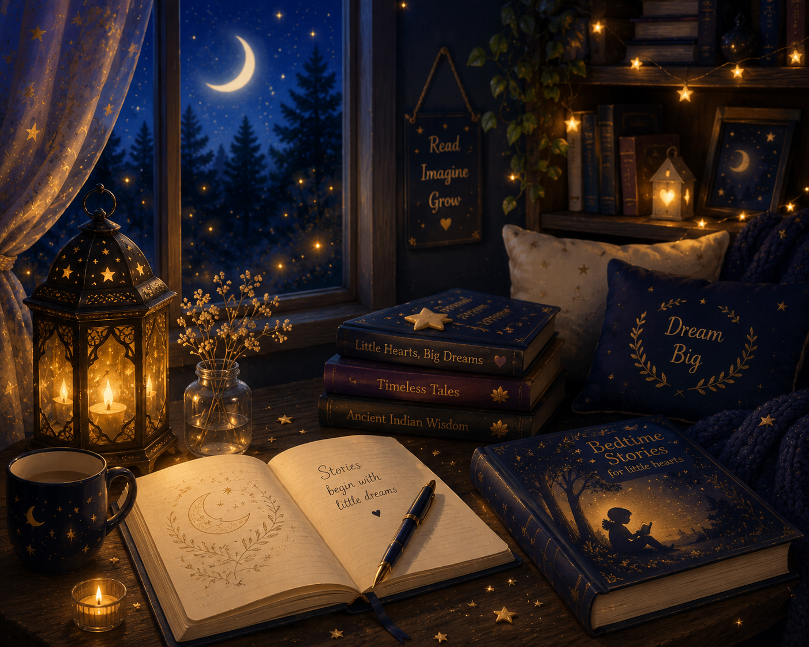

Stories for sleepy evenings, wonder-filled conversations, and little moments that quietly become memories ✨
Gentle bedtime tales and wonder-filled moments for little hearts 🌙
Stories, wonder, wisdom, and gentle moments for growing hearts ✨

Some of the sweetest moments in childhood begin with a simple question. Why do stars twinkle? Where does the moon go during the day? Can a tiny firefly be brave?
Jaanu's Amma Thinks grew from moments like these — quiet conversations, bedtime stories, and little wonders shared between a mother and her daughter. Today, it is a gentle little corner filled with stories, wonder, wisdom, and the kind of magic that hides in everyday moments.
Every story here is inspired by one very curious little girl who reminds me each day that wonder is never far away. 🤍
Read StoriesEvery story begins with a conversation.
If one of these stories made your child smile, if a Wonder Talk sparked a new question, or if a reflection met you at just the right moment, I'd be delighted to hear about it.
This little corner of the internet was built with love for curious children and the grown-ups who walk beside them.
So whether you'd like to share a thought, ask a question, suggest a story, or simply say hello, my inbox is always open.
Have a question about a story? A Wonder Talk you'd like to see? Or simply a little wonder you'd like to share?
letswonder@jaanusammathinks.comFor partnerships, guest features, media inquiries, speaking opportunities, or professional collaborations.
askamma@jaanusammathinks.com
I read every message personally and will do my best to reply when I can.
Until then, keep wondering, keep reading, and keep finding magic in the little things.
With warmth,
Pranali
Jaanu's Amma Thinks 🌙